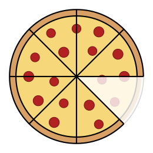
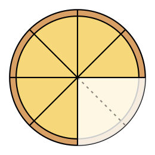
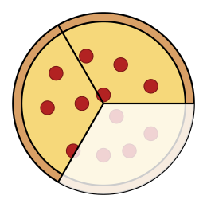
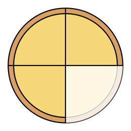
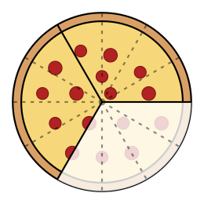

Guided Notes - Unit 1: Foundations - DHS Algebra 1
Teacher Key: answers in red
Objectives
Add and subtract fractions with like denominators
Add and subtract fractions with unlike denominators
Add and subtract mixed numbers
Warm-Up
1. Monique ate 1 slice of pepperoni and 2 slices of cheese.
Both pizzas were cut into 8 equal slices. How much pizza did she eat?

pepperoni

cheese
Answer: 38
2. Jack ate 1 slice of a pepperoni pizza cut into 3 pieces and
1 slice of a cheese pizza cut into 4 pieces. How much pizza did he eat?

thirds

fourths
Answer: 712
1.5.1Like Denominators
Monique ate 1 slice + 2 slices, and both pizzas were cut into 8. Every slice is the
same size, so just count slices: 18 + 28 = 38.
The denominator says how big each piece is. The pieces never changed size,
so it stays. The numerator counts how many pieces you have. That is the part that changes.
Keep the denominator.
Combine the numerators.
Always check whether you can simplify.
Gotcha: numerators only
Do not combine the denominators. 27 + 37 is not514.
EX 1.27 + 37EX 2.1112 − 512EX 3.59 + 79
57
612 = 12
129 = 43 = 113
EX 4.38 − 78. The first fraction is smaller, so the answer is negative.
Combine the numerators: 3 − 7 = −4
Answer: −48 = −12
Write the sign in front.
You Try.1015 − 415
615 = 25
1.5.2Unlike Denominators
EX 5.13 + 14 (Jack's pizza). The thirds and the fourths are not the same size, so cut both into twelfths.
thirdsfourths

twelfthstwelfths
44 × 13 + 14 × 33 =
___12 + ___12
Answer: 412 + 312 = 712
Gotcha: top and bottom
44 = 1, so multiplying by it does not change the value. Multiply only the
bottom and you have changed the fraction into a different number.
Different denominators mean the pieces are different sizes.
A common denominator is a number that both denominators divide into evenly.
To find one: list the
multiples of each and take the first number both lists show.
Multiples of 3: 3, 6, 9, 12, 15…
Multiples of 4: 4, 8, 12, 16…
→ common denominator: 12
Then divide to find what each
fraction gets multiplied by: 12 ÷ 3 = 4 and
12 ÷ 4 = 3.
EX 6.78 − 14
Multiples of 8: 8, 16, 24…
Multiples of 4: 4, 8, 12…
Common denominator: 8
8 ÷ 4 = 2
the first fraction is already in eighths.
78 − 14 × 22 =
78 − 28 = 58
You Try.23 + 16
common denominator 6 46 + 16 = 56
EX 7.34 − 25EX 8.56 + 79
common denominator 20
1520 − 820 = 720
common denominator 18
1518 + 1418 = 2918 = 11118
EX 9.14 − 23
Answer: 312 − 812 = −512
After rewriting, 312 − 812: the first numerator is smaller, so the answer is negative.
You Try.25 − 34
common denominator 20 820 − 1520 = −720
A shortcut, if you want it
If you are ok having to do more work simplifying your answer, you can skip writing out
multiples by multiplying the two denominators together instead. For 56 + 79
that gives 54 instead of 18. Same answer, but
bigger numbers to simplify at the end.
1.5.3Adding & Subtracting Mixed Numbers
Why not combine the whole numbers, then the fractions? Try that on
614 − 338. You cannot take 38 away from 14,
so you would have to borrow from the 6. Turn each mixed number into an improper fraction first instead.
Convert each to an improper fraction: 3 × 4 + 1 = 13, so 314 = 134.
Get a common denominator, then combine.
Simplify. Convert back to a mixed number if you need to.
A whole number is a fraction over 1, so 8 = 81.
EX 10. 213 + 156
Convert: 213 = ___3 156 = ___6
Common denominator: 6
213 = 73 156 = 116
Answer: 146 + 116 = 256 = 416
EX 11. 412 − 234EX 12. 8 − 347
184 − 114 = 74 = 134
567 − 257 = 317 = 437
You Try. 512 − 235
5510 − 2610 = 2910 = 2910
1.5 Adding & Subtracting Fractions - Practice
Practice
Add and Subtract Fractions
1. 38 + 18 = 48 = 12
2. 56 − 16 = 46 = 23
3. 29 + 49 = 69 = 23
4. 1112 − 712 = 412 = 13
5. 29 − 59 = −39 = −13
6. 14 + 16 = 312 + 212 = 512
7. 58 − 14 = 58 − 28 = 38
8. 35 + 710 = 610 + 710 = 1310 = 1310
9. 910 − 215 = 2730 − 430 = 2330
10. 13 − 45 = 515 − 1215 = −715
11. 59 − 1112 = 2036 − 3336 = −1336
12. 112 + 214 = 64 + 94 = 154 = 334
13. 435 − 125 = 165 = 315
14. 316 + 256 = 366 = 6
15. 614 − 338 = 238 = 278
16. 213 − 556 = 146 − 356 = −312
Word Problems
17. You drink 34 of a liter of water in the morning and 18 of a
liter in the afternoon. How much water did you drink total?
Answer: 78 of a liter
18. A rope is 512 meters long. If 234 meters are cut off,
how much remains?
Answer: 234 meters
19. A recipe needs 23 cup of sugar. If you already added 14 cup,
how much more do you need?
Answer: 512 cup
20. On Monday the temperature rose 34 of a degree. On Tuesday it fell
112 degrees. What was the total change in temperature over the two days?
Answer: 34 − 64 = −34 of a degree
Challenge Problems
21. Two fractions have a sum of exactly 1. One of them is 38.
What is the other fraction?
1 − 38 = 88 − 38 = 58
22. A runner completes 423 miles on Monday and 356 miles on
Tuesday. How many miles did they run total?